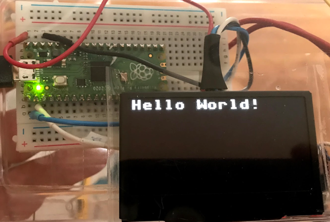

Drawing
Basic Draw Functions
For our beginning labs we will just do some basic drawing. We will start out with just four functions:
- Initialize the display framebuffer memory with the right object class initialization
- Fill the framebuffer will zeros which are black pixels with the oled.fill(0)
- Draw white text in the framebuffer memory with the oled.text("Hello World!", 40, 10)
- Send the entire framebuffer to the display over the bus with the oled.show() function.
Initializing the Framebuffer
Let's assume that we have a four wire OLED that uses the popular SSD1306 chip with 128X64 pixels. We call our oled "oled" using the following line:
1 2 | |
| Function | Description | Parameters |
|---|---|---|
| oled.fill(0) | Fill the display with white or black | 0=black and 1=white |
| oled.text("Hello", | Draw text | String, x (horizontal from left edge) and y (vertical from the top)Example: Draw "Hello World" 40 over and 10 down. oled.text("Hello World!", 40, 10) |
| show | Show the display | Send the current frame buffer to the display. You must do this after you make and changes to the Framebuffer. |
The full program would look like this:
1 2 3 4 5 | |
This would display the following:

Full list of Drawing Functions
Every drawing library might have slightly different functions. But we can quickly see the functions that we want by using the dir() function on the SSD1306_I2C class.
1 2 | |
1 2 3 4 5 | |
The following are relevant for the SSD1306_I2C display.
The display has (0,0) in the upper left corner. X is horizontal (width) and Y is vertical (height). The state or color is 0=off (black) and 1=on (white).
| Function | Description | Example |
|---|---|---|
| blit(fbuf, x, y, color) | Bit Level Transfer | blit(fbuf, 1, 1) |
| fill(state) | Fill | Fill with black (0) or white(1) |
| fill_rect | Fill a rectangle | |
| hline(x, x, length, state) | Draw a horizontal line | Draw a horizontal line at the top of the display: oled.hline(0, 0, 127, 1) |
| invert() | invert the display | Filp the orientation of the display |
| line(x1,y1,x2,y2) | draw a line at any angle | Horizontal oled.line(0,0, 127, 63, 1) |
| pixel(x,y, color) | Draw a single point on the screen | |
| rect(x, y, width, height) | Draw an empty rectangle | |
| scroll(x,y) | Scroll the display | |
| text(x,y,color) | Write text at a point | |
| vline(x,y,length, color) | Draw a Vertical Line | oled.vline(width - 1, 0, height - 1, 1) # right edge |
| init_display() | Initialize the display | |
| write_cmd | Write a command to the display | |
| show() | Update the display from the frame buffer | |
| poweroff() | ||
| poweron() | ||
| contrast() | ||
| write_data() |
Pixel Drawing Example
1 2 3 4 5 6 7 8 9 10 11 12 13 14 15 16 17 18 | |
Drawing Tutorial and Primitives
Taken from the MicroPython site: Using a SSD1306 OLED display - although the path name imply the ESP8266, these functions also run on the Raspberry Pi Pico.
1 2 3 4 5 6 7 8 9 | |
1 2 3 4 5 6 7 8 9 10 | |
Working with the framebuf
A frame buffer is a region of RAM that holds an exact image of what is on the display. The data can be copied from the framebuffer memory with the blit() (BLock Transfer) operation that copies a rectangular area of one framebuffer to another framebuffer.
Here is an example of the blit() function:
1 | |
1 2 3 4 5 6 | |
References
- Driving I2C OLED displays with MicroPython - by Martin Fitzpatrick
- ST7735 Micropython Driver by Anthony Norman